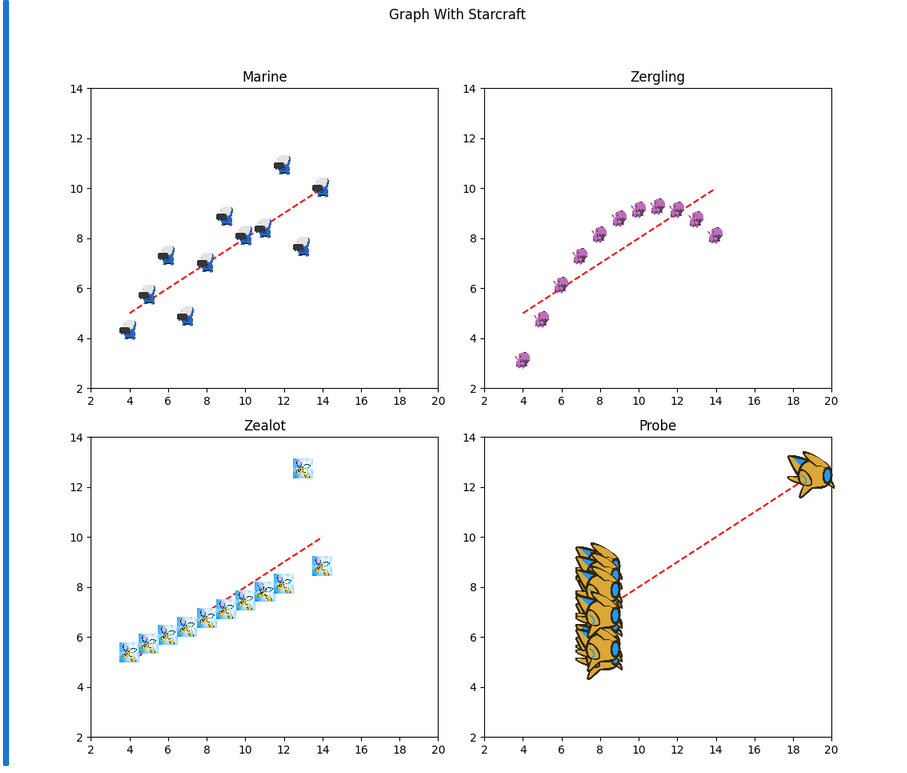

About Me
I am the bestest there is (⌐■_■)
Jekyll is making my brain melt. HTML and CSS as of right now; will change to Jekyll theme (self-built with Ruby and Git) before course ends hopefully.
Projects
Starcraft AI
Currently building AI in Starcraft Brood War using Protoss. Might run into build order issues since I’m a master-ranked Starcraft 2 player, not Brood War. (Race will be Terran and Protoss)
StarCraft Anscombe Quartet Code Explanation
Explaintion with code underneath for understanding of workflow
-
1. Importing Libraries: Uses matplotlib for plotting, PIL to open images, and numpy for arrays and math operations.
from matplotlib.offsetbox import OffsetImage, AnnotationBbox from PIL import Image import numpy as np import matplotlib.pyplot as plt -
2. Data Arrays: Defines x and y values for four datasets (Marine, Zergling, Zealot, Probe).
x123 = np.array([10, 8, 13, 9, 11, 14, 6, 4, 12, 7, 5]) y1 = np.array([8.04, 6.95, 7.58, 8.81, 8.33, 9.96, 7.24, 4.26, 10.84, 4.82, 5.68]) y2 = np.array([9.14, 8.14, 8.74, 8.77, 9.26, 8.10, 6.13, 3.10, 9.13, 7.26, 4.74]) y3 = np.array([7.46, 6.77, 12.74, 7.11, 7.81, 8.84, 6.08, 5.39, 8.15, 6.42, 5.73]) x4 = np.array([8, 8, 8, 8, 8, 8, 8, 19, 8, 8, 8]) y4 = np.array([6.58, 5.76, 7.71, 8.84, 8.47, 7.04, 5.25, 12.50, 5.56, 7.91, 6.89]) -
3. Loading Images: Opens PNG files for each StarCraft unit to use as custom markers.
marine_icon = Image.open('marine.png') zergling_icon = Image.open('zergling.png') zealot_icon = Image.open('zealot.png') probe_icon = Image.open('probe.png') -
4. Function to Create Icons:
get_iconwraps an image for plotting withOffsetImageand controls its size withzoom.def get_icon(image, zoom=0.1): return OffsetImage(image, zoom=zoom) -
5. Dataset Configuration: Groups each dataset with x-values, y-values, a label, and the corresponding image for easy looping.
datasets = [ (x123, y1, 'Marine', marine_icon), (x123, y2, 'Zergling', zergling_icon), (x123, y3, 'Zealot', zealot_icon), (x4, y4, 'Probe', probe_icon), ] -
6. Create Subplots: Sets up a 2x2 grid of plots and flattens axes for looping.
fig, axes = plt.subplots(2, 2, figsize=(10, 10)) axes = axes.flatten() -
7. Regression Line Function: Defines a simple reference line
y = 3 + 0.5xto overlay on all plots.def fit_line(x): return 3 + 0.5 * x -
8. Plotting Each Dataset: Loops through datasets, plots the regression line, places the StarCraft icons at data points, and sets titles and axis limits.
for ax, (x, y, label, icon_image) in zip(axes, datasets): x_line = np.array([min(x), max(x)]) ax.plot(x_line, fit_line(x_line), 'r--', label='fit line') for xi, yi in zip(x, y): ab = AnnotationBbox(get_icon(icon_image, zoom=0.08), (xi, yi), frameon=False) ax.add_artist(ab) ax.set_title(label) ax.set_xlim(2, 20) ax.set_ylim(2, 14) -
9. Final Plot Formatting: Adds a main title, adjusts layout spacing, and displays the plot.
plt.suptitle("Graph With Starcraft") plt.tight_layout(rect=[0, 0.03, 1, 0.95]) plt.show()
The resulting graph will look like this
